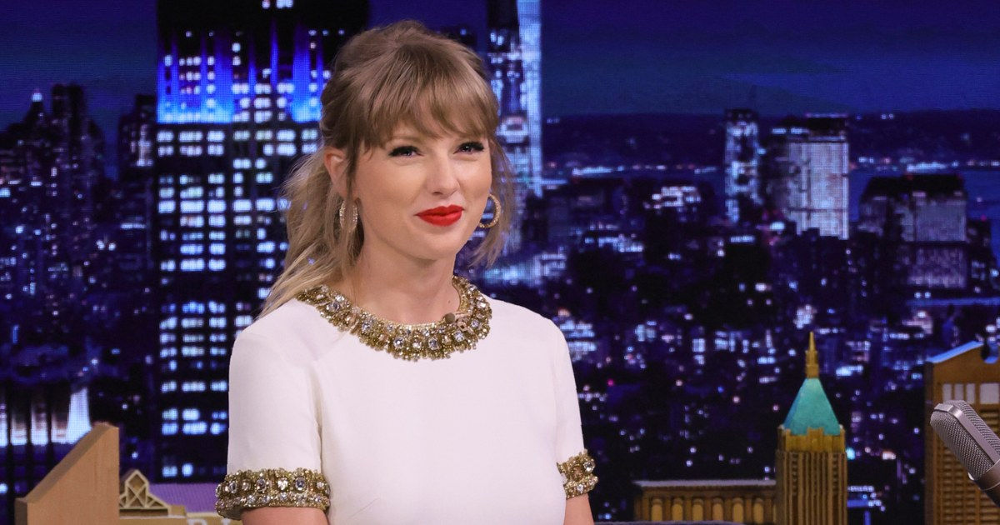
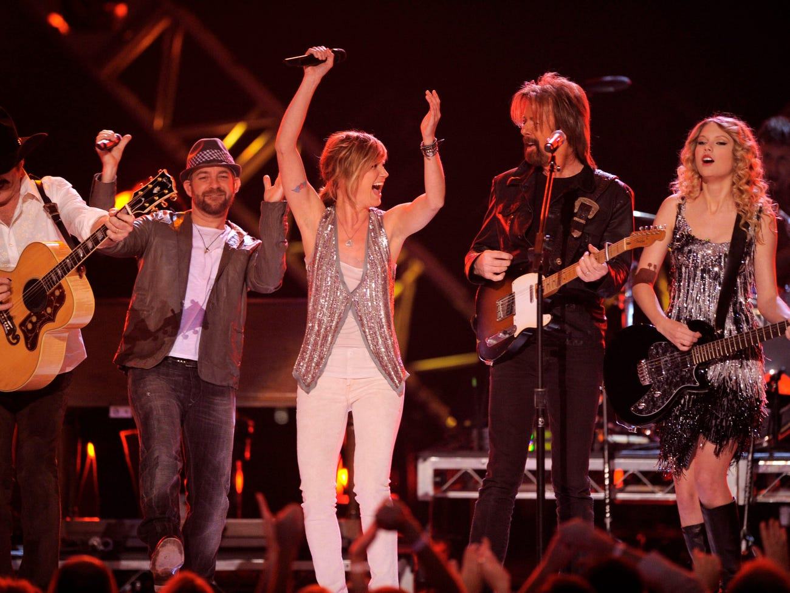
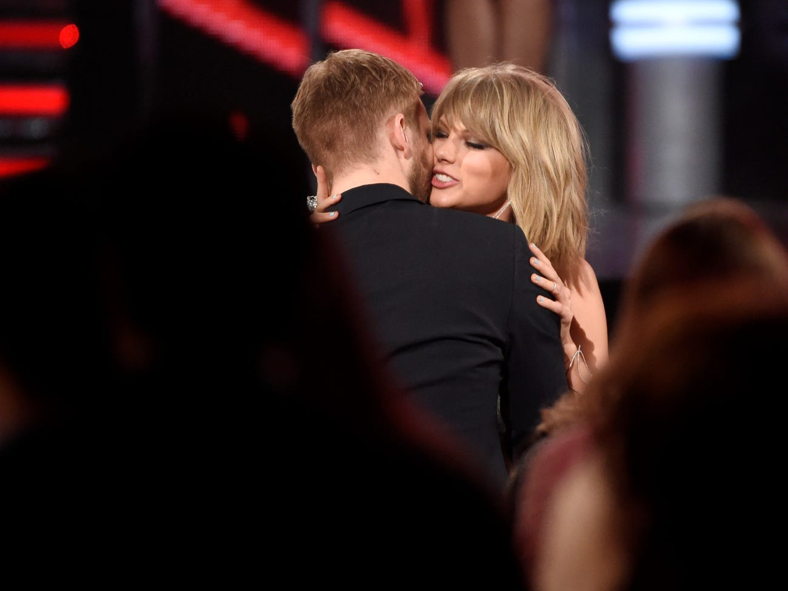
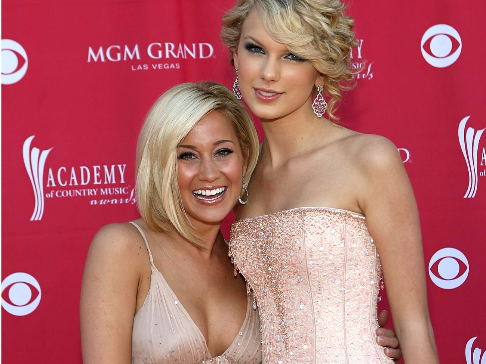
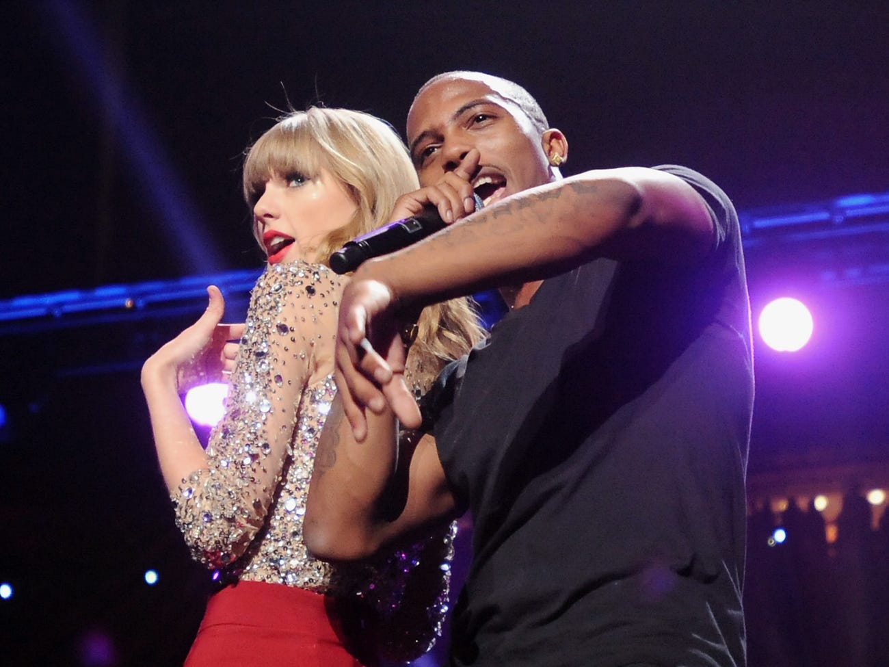
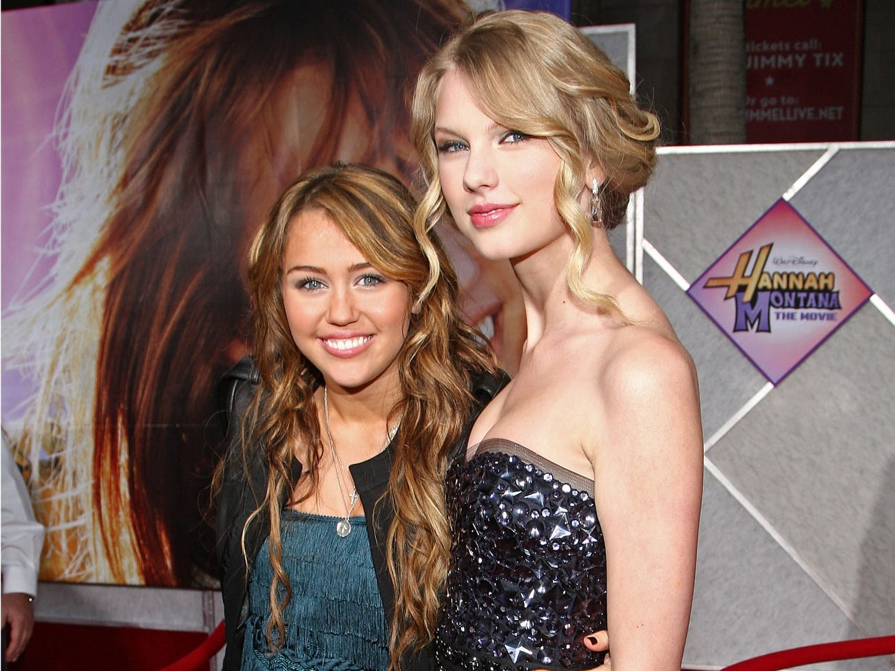
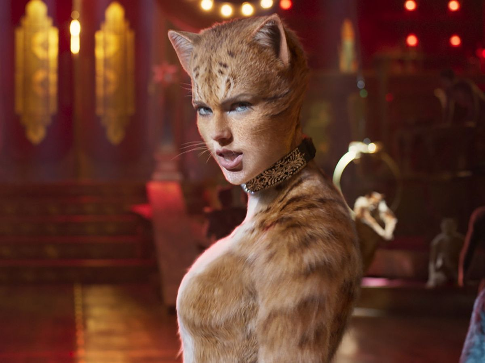
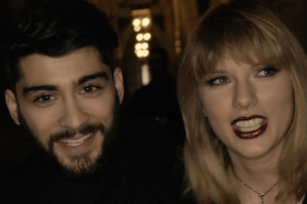

Taylor Swift is an American artist and performer. But she is also known for her incredible songwriting skills. She indeed won some awards for it.
Swift participated in the songwriting process of the entirety of her discography. Some songs were co-written and some were solo written.
Although she is an amazing singer and vocalist, she also wrote some songs for other artists and for movies and series as well.
Sometimes her songs are used in the audiovisual field even though her songs weren't destined for that specific movie or series
Taylor Swift wrote "Better Man" in her Red era and sent it to the band Little Big Town.
Years later, for the rerelease of her album Red, she added that song to her Vault tracks list.

"Babe" is in the same situation as "Better Man". Taylor also co-wrote it with Sugarland during her Red era and later on rerelased it on "Red (Taylor's Version).
The only difference is that the song originally features her unlike "Better Man" which only features her in the songwriting credit.

Taylor Swift collaborated with Calvin Harris who was at the time her boyfriend. She wrote that song which was sung by Rihanna.
Calvin Harris and Taylor Swift both knew the song would be a hit, but Taylor wrote it for Calvin and they both agreed it was a bad idea to let the world know they collaborated as a couple, they thought it would overshadow the song.
In the songwriting credit was credited someone named Nils Sjoberg. Eventually, a representative for Swift confirmed that Swift wrote the song under that secret name.
<

Swift and Kellie Pickler collaborated a few years back and cowrote the song "Best Days of Your Life."
Kellie said in an interview that this song was what "Picture To Burn" was to Taylor Swift and what "Before He Cheats" was to Carrie Underwood.

In 2012, Swift pushed even more genre boundaries and collaborated with rapper B.o.B. to release "Both of Us"

Rock band Boys Like Girls got the chance to collaborate with Swift for their 2009 release "Two Is Better Than One" And she was prominently featured on the track.
According to Billboard, the song helped to boost the band's already-successful summer and to display their "softer side".

Swift may not have had her own show on Disney Channel, but her music served as a fan-favorite tune for "Hannah Montana: The Movie" (2009).
Taylor indeed wrote the song "You'll Always Find Your Way Back Home" sung by Miley Cyrus, Hannah Montana in the movie.
She also wrote the song "Crazier" for the same movie.

Some fans might be familiar with Swift's contributions to "The Hunger Games" soundtrack.
Swift cowrote "Safe and Sound" with The Civil Wars. The group ended up winning a Grammy in 2013 for "Safe and Sound".
Taylor Swift's song "Eyes Open" was also featured on the movie's soundtrack.

Swift played Bombalurina in the 2019 film adaptation of the musical "Cats", but she also got to collaborate with legendary musical theater composer Andrew Lloyd Webber on the original song "Beautiful Ghosts".
Francesca Hayward sings the song in the film, but Taylor Swift also recorded a studio version of it.
"There was an ambition and an aspiration to have an original song in the movie" Swift said in an interview with Universal Pictures. "It was just this beautiful haunting melody".

Taylor Swift wrote that song for the movie "Fifty Shades Darker", she features on this song with former One Direction artist, ZAYN.
Swift performed it solo on her reputation stadium tour.

Swift released a documentary on Netflix, "Miss Americana" in 2019 for which she released a song : "Only The Young".

Taylor Swift wrote the song "Carolina" for the new movie "Where the Crawdads Sing" adapted from the original book written by Delia Owens.
The song tells the story of a woman who grew up in the wilderness of the South and survived all by herself
Click here to come back to home !